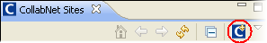
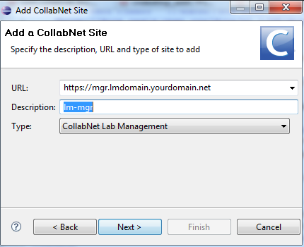

To access and manage your Lab Management hosts, add your Lab Management Manager site to the CollabNet Sites view.
To complete this task you must have your Lab Management API key. Copy your key to the clipboard and then follow these steps.
- In the CollabNet Sites view, click the Add CollabNet Site icon

.
- Select CollabNet TeamForge Lab Management for the site type and click Next.

- Specify the URL and description for the site. For example, http://mgr.lmdomain.yourdomain.net. Click Next.
- Enter your username for the Lab Management site.
- Paste the Lab Management API key that you copied to the clipboard.
- Default values have been provided for SSH settings. You may need to ask your Lab Management site Administrator for information on how your site is deployed, and edit the appropriate settings. For example, if the deployment model for your site requires that you tunnel through the Lab Management Manager to access the Client Nodes, select Tunnels required to access host.
- Click Finish.
The Lab Management Manager site should now be available in the CollabNet Sites view. You can expand it to see your hosts, as well as other allocated and free hosts in your projects.